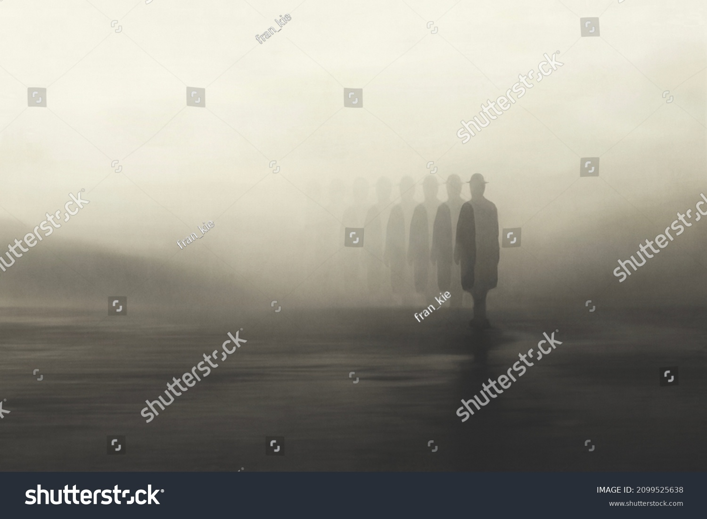

Lübeck, Germany — a city of red-brick Gothic churches, winding alleys, and centuries-old secrets. As Halloween approached, the town was cloaked in a fog unlike any seen before. It rolled in from the Baltic Sea, thick and warm, whispering through the streets like a living thing. Zara Roksandic, a 17-year-old student at the Katharineum Gymnasium, had always loved Halloween. Though the holiday wasn’t deeply rooted in German tradition, Lübeck had adopted it with eerie enthusiasm. Children carved pumpkins, teens dressed as witches and ghosts, and the old town square hosted a lantern-lit parade. But this year, something was wrong. The fog came early—weeks before Halloween—and lingered unnaturally. People began hearing voices in it. Not just whispers, but names. Their own names. Zara first noticed it on her walk home from school. The fog curled around her ankles like smoke, and she heard a faint, breathy voice say, “Zara…” She turned. No one was there.
At home, Zara asked her grandmother, Oma Ingrid, about the fog. Oma’s face paled. “It’s the Nachtgeister,” she whispered. “The Night Spirits. They come when the veil between worlds thins. Long ago, they haunted Lübeck every All Hallows’ Eve, searching for souls to steal.” Zara scoffed. “That’s just a story.” But Oma didn’t smile. “They wear lanterns carved from human skulls. And they whisper your name before they take you.” That night, Zara dreamed of lanterns glowing in the fog—faces flickering inside them, mouths open in silent screams.
Three days before Halloween, a boy from Zara’s school vanished. Lukas Becker, known for his pranks and loud laughter, was last seen walking home through the fog. His phone was found on the cobblestones, screen cracked, camera open. The last photo showed a blurry figure in the mist—tall, cloaked, holding a lantern. The town panicked. Police searched the alleys and canals. But Lukas was gone. Zara couldn’t sleep. The fog pressed against her window like a living thing. And every night, she heard her name whispered from the street.
Despite the fear, the town held its annual lantern parade. Children marched with glowing pumpkins, and adults wore costumes to ward off spirits. Zara joined her friends, hoping to distract herself. But as the parade wound through the old town, the fog thickened. Lanterns flickered. Shadows danced. Then she saw it—a figure in a long coat, holding a lantern that glowed with an eerie blue light. Inside the lantern, a face twisted in agony. Zara froze. The figure turned toward her. “Zara,” it whispered. She ran.
Zara’s flight led her to the Marienkirche, the ancient church at Lübeck’s heart. She remembered stories of a hidden crypt beneath its foundations. She found the entrance behind a crumbling statue and descended into darkness. The air was cold, the walls damp. Her flashlight flickered. In the crypt, she found old bones, broken lanterns, and a journal. It belonged to a monk who had tried to banish the Nachtgeister centuries ago. The ritual required a lantern made of silver and a soul brave enough to face the spirits. Zara knew what she had to do.
On Halloween night, Zara returned to the crypt with a silver lantern she had crafted. The fog was thicker than ever. The town was silent. She lit the lantern and called the spirits. They came—figures cloaked in mist, lanterns glowing with stolen souls. They surrounded her, whispering her name. Zara held up the silver lantern. “You cannot have me,” she said. The spirits recoiled. Light burst from the lantern, piercing the fog. One by one, the Nachtgeister vanished, their lanterns shattering. The fog lifted.
Lübeck awoke to clear skies and warm sun. The fog was gone. Lukas Becker was found wandering near the harbor, confused but alive. Zara became a local legend. Her story was told every Halloween, and the silver lantern was placed in the town museum. But sometimes, on foggy nights, people still hear whispers. And Zara keeps the journal close, just in case.
Lose a friend
Get haunted
Fear for your life
Confront the haunt
Win